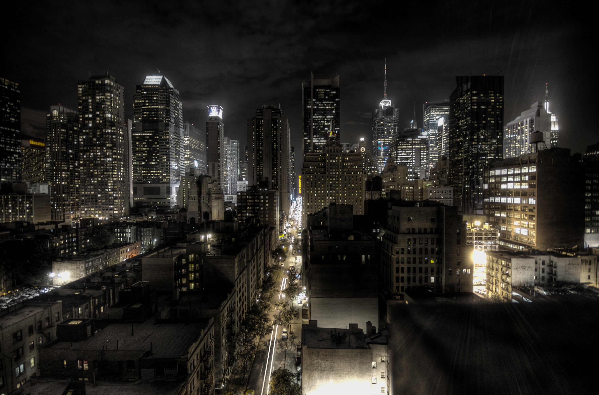

La ciudad
Conocé la historia, los barrios, las costumbres y las principales características de la caótica Gotham.

Conocer la ciudad
Descubrí la ciudad ficticia ubicada en el estado de Nueva Jersey, Estados Unidos.
Gotham City es una ciudad notoriamente corrupta y plagada por índices de criminalidad excesivamente altos, Gotham ha sido dominado por una serie de señores del crimen a lo largo de su historia moderna.
⚠️ Antes de recorrer las calles, te recomendamos leer nuestra Guía de Supervivencia Ciudadana.
Conocé la historia, los barrios, las costumbres y las principales características de la caótica Gotham.

Descubrí algunos de los lugares turísticos más importantes y sombríos que podés visitar durante tu viaje.
Ver lugares